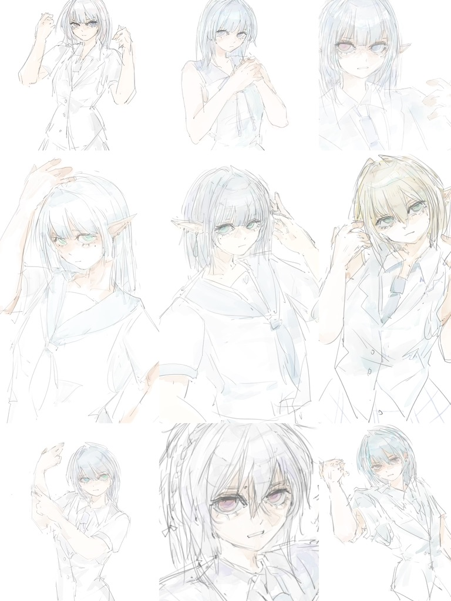
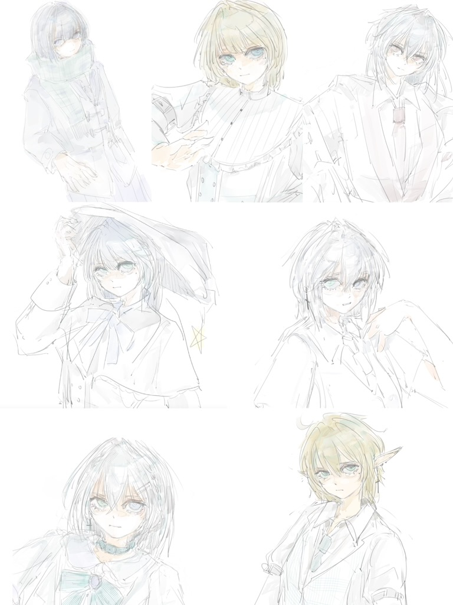

illustration.



UX/UI designer with a background in software engineering and a Master’s in UX design. Focused on inclusive, research-driven experiences that merge clarity and emotion.
about.
I explore the intersection of audio, emotion, and interaction. With experience in e-health, nonprofit, and cultural heritage projects, my goal is to design systems that not only work but also resonate.
illustration.